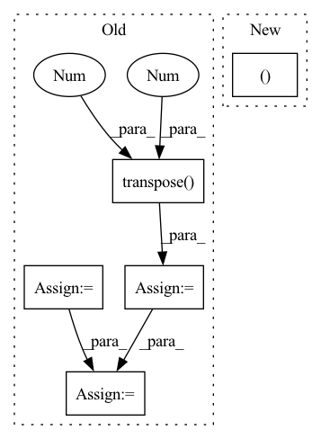

Pattern ID :1339
Before Change
// b(hc)1q -> bchq
shape = (batch_count, self.head_count, self.head_dim, -1)
values = values.reshape(shape)
values = values.transpose(1, 2)
queries = queries.reshape(shape)
queries = queries.transpose(1 , 2 )
// print(keys.shape, "keys", values.shape, "values", queries.shape, "queries")
attention_bias = torch.where(
attention_mask,
torch.zeros([1, 1]),
torch.ones([1, 1]) * (-torch.inf),
)
attention_weights: FloatTensor = torch.einsum(
"bchq,bkhc->bkhq",
queries / self.head_dim ** 0.5,
keys
)
attention_weights += attention_bias[:, :, None, None]
attention_weights = torch.softmax(attention_weights, 1)
// print(attention_weights.shape, "attention_weights")
hidden_state: FloatTensor = torch.einsum(
"bkhq,bchk->bchq",
attention_weights,
values
)
// bchq -> b(hc)1q
// print(hidden_state.shape, "hidden_state")
hidden_state = hidden_state.transpose(1, 2)
hidden_state = hidden_state.reshape(batch_count, self.embed_count, 1, -1)
hidden_state = self.out_proj.forward(hidden_state)
// print(hidden_state.shape, "hidden_state")After Change
attention_weights,
values
)
shape = attention_output.shape[:2] + (self.embed_countIn pattern: SUPERPATTERN
Frequency: 3
Non-data size: 5
Instances Fragment ID: 4647878
Project Name: kuprel/min-dalle
Commit Name: c936d261021f0f38d064e146a2167cf3daeeb0db
Time: 2022-06-27
Author: brkuprel@gmail.com
File Name: min_dalle/models/dalle_bart_encoder_torch.py
M Class Name: AttentionTorch
N Class Name: AttentionTorch
M Method Name: forward(5)
N Method Name: forward(5)
M Parent Class: nn.Module
N Parent Class: nn.Module
M File Name: min_dalle/models/dalle_bart_encoder_torch.py
N File Name: min_dalle/models/dalle_bart_encoder_torch.py
M Start Line: 42
M End Line: 82
N Start Line: 43
N End Line: 61
Before Change
// [B, T, C]
x_emb = self.emb(x)
// [B, C, T]
x_emb = torch.transpose( x_emb, 1 , -1 )
// compute sequence masks
x_mask = torch.unsqueeze(sequence_mask(x_lengths, x.shape[1]),
1).to(x.dtype)
y_mask = torch.unsqueeze(sequence_mask(y_lengths, None),
1).to(x_mask.dtype)
// encoder pass
o_en = self.encoder(x_emb, x_mask)
// duration predictor pass
o_dr_log = self.duration_predictor(o_en.detach(), x_mask)
// expand o_en with durations
o_en_ex, attn = self.expand_encoder_outputs(o_en, dr, x_mask, y_mask)
// positional encoding
if hasattr(self, "pos_encoder"):After Change
def forward(self, x, x_lengths, y_lengths, dr, g=None): // pylint: disable=unused-argument
o_en, o_en_dp, x_mask, g = self._forward_encoder(x, x_lengths, g)
o_dr_log = self.duration_predictor(o_en_dp.detach(), x_mask)
o_de, attn = self._forward_decoder(o_en, o_en_dp, dr, x_mask, y_lengths, g=g)
return o_de, o_dr_log.squeeze(1), attn
def inference(self, x, x_lengths, g=None): // pylint: disable=unused-argument Fragment ID: 4648004
Project Name: coqui-ai/tts
Commit Name: aa40fe1aa0382bf5148d1475dd647def1d2ed332
Time: 2021-01-06
Author: erogol@hotmail.com
File Name: TTS/tts/models/speedy_speech.py
M Class Name: SpeedySpeech
N Class Name: SpeedySpeech
M Method Name: forward(6)
N Method Name: forward(6)
M Parent Class: nn.Module
N Parent Class: nn.Module
M File Name: TTS/tts/models/speedy_speech.py
N File Name: TTS/tts/models/speedy_speech.py
M Start Line: 62
M End Line: 89
N Start Line: 124
N End Line: 127
Before Change
preds.append(self.Linear(h))
preds = torch.stack(preds, dim = 1)
if y is not None:
preds_ = torch.transpose( preds, 1 , 2 )
//print(preds.size())
y = y.long()
loss = self.Loss(preds_, torch.squeeze(y))
return preds, loss
return preds
After Change
preds_ = torch.stack(preds_, dim = 1)
if y is not None:
loss/=len(xs)
return preds_, loss
return preds_
Fragment ID: 4647875
Project Name: dido1998/recurrent-independent-mechanisms
Commit Name: d87a800096eaa36730cbabac535eea24973f3799
Time: 2020-02-11
Author: adidolkar123@gmail.com
File Name: networks.py
M Class Name: CopyingModel
N Class Name: CopyingModel
M Method Name: forward(5)
N Method Name: forward(5)
M Parent Class: nn.Module
N Parent Class: nn.Module
M File Name: networks.py
N File Name: networks.py
M Start Line: 255
M End Line: 276
N Start Line: 291
N End Line: 313